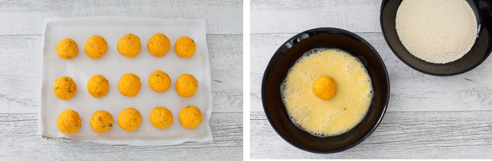

La regina dell'autunno è tornata e con la ricetta delle polpette di zucca ve la proponiamo in una preparazione semplice ma sfiziosa. Servono infatti pochi ingredienti facilmente reperibili, come il pangrattato, le uova e il formaggio grana, per realizzare delle gustose crocchette di zucca da servire a cena come secondo piatto o come stuzzichino da antipasto.
Queste polpette sono anche veloci da realizzare. Partendo dalla polpa di zucca già cotta si impastano e friggono in poco più di mezz'ora. Se invece volete provare una versione più leggera di questa ricetta potete cuocere le polpette di zucca al forno spruzzandole in superficie con un po' di olio d'oliva prima di infornarle.
La zucca è un ortaggio tra i più versatili, che in cucina si presta a moltissime preparazioni salate e dolci. Con una zucca a disposizione potete infatti preparare piatti classici come il Risotto alla zucca, gli Gnocchi di zucca o la Vellutata di zucca. Alcuni esempi più creativi? Le Lasagne con zucca, calamari e finocchietto, i Cannelloni di zucca e ricotta o le Focacce alla zucca.
-
1.
Realizzate l'impasto per preparare le polpette di zucca riunendo in un mixer la polpa di zucca cotta e fredda, l'uovo intero, il pecorino grattugiato, il pangrattato e la salvia. Frullate fino a ottenere un composto omogeneo e aggiustate di sale, pepe e noce moscata. Fate riposare per 20 minuti in frigorifero. - 2.
Trascorso questo tempo riprendete l'impasto e con le mani leggermente inumidite formate delle polpette della dimensione di un mandarino, passatele prima nell’uovo sbattuto e poi nel pangrattato ricoprendole uniformemente. -
3.
Mano a mano che sono pronte disponetele su un vassoio coperto con carta forno o pellicola. Scaldate in una casseruola abbondante olio portandolo a 170° e friggetevi poche polpette alla volta, rigirandole con un mestolo forato, fino a quando saranno belle dorate.

-
4.
Scolatele con un mestolo forato e fatele asciugare sulla carta per fritti, tenendole al caldo fino al termine della frittura. Trasferite quindi le polpette di zucca su un piatto da portata, salatele a piacere con sale Maldon e servite.